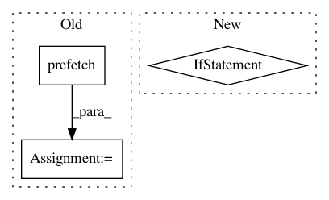

c1db25d9281a9374005d5c8b4e183b8e6d7d2ace,cloud_tpu/models/resnet/estimator_resnet.py,,input_fn,#Any#Any#,193
Before Change
num_threads=FLAGS.map_threads,
output_buffer_size=FLAGS.map_buffer_size or batch_size)
dataset = dataset.batch(batch_size)
dataset = dataset.prefetch(2)
images, labels = dataset.make_one_shot_iterator().get_next()
// TODO(xiejw,saeta): Consider removing the sharding dimension below.
images_shape = images.get_shape().as_list()
if images_shape[0] is None:
After Change
dataset = tf.contrib.data.Dataset.list_files(input_dataset.file_pattern)
if is_training:
if FLAGS.input_files_shuffle_capacity > 0:
dataset = dataset.shuffle(FLAGS.input_files_shuffle_capacity)
dataset = dataset.repeat()
def prefetch_dataset(filename):
dataset = tf.contrib.data.TFRecordDataset(filename)
In pattern: SUPERPATTERN
Frequency: 3
Non-data size: 3
Instances
Project Name: tensorflow/tpu
Commit Name: c1db25d9281a9374005d5c8b4e183b8e6d7d2ace
Time: 2017-09-06
Author: frankchn@google.com
File Name: cloud_tpu/models/resnet/estimator_resnet.py
Class Name:
Method Name: input_fn
Project Name: tensorflow/tpu
Commit Name: 7d209b46e2f6402e44c69f6fe00384aa14286b08
Time: 2018-03-22
Author: frankchn@google.com
File Name: models/experimental/resnet_bfloat16/imagenet_input.py
Class Name: ImageNetInput
Method Name: input_fn
Project Name: tensorflow/tpu
Commit Name: 2feab9beb8c59f05ca2e1938f484b6bce638af47
Time: 2019-01-22
Author: frankchn@google.com
File Name: models/experimental/mask_rcnn/dataloader.py
Class Name: InputReader
Method Name: __call__